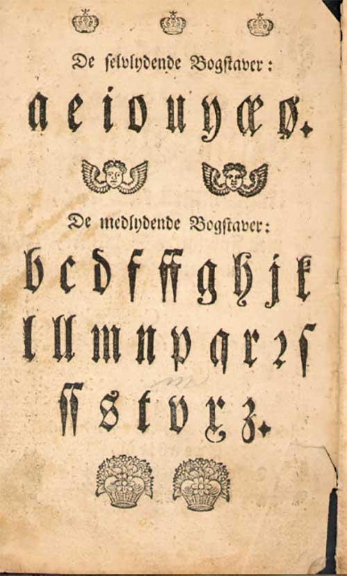
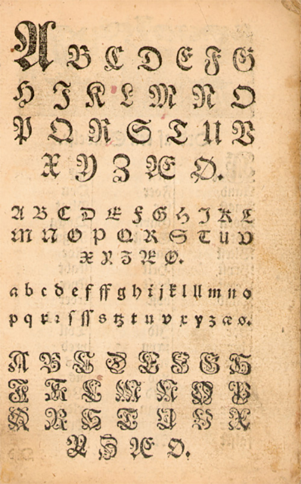
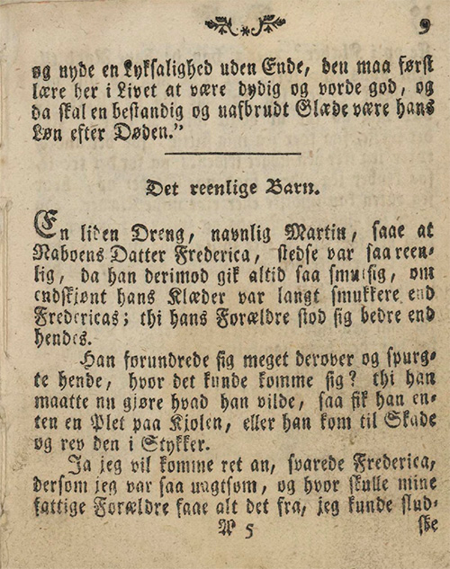
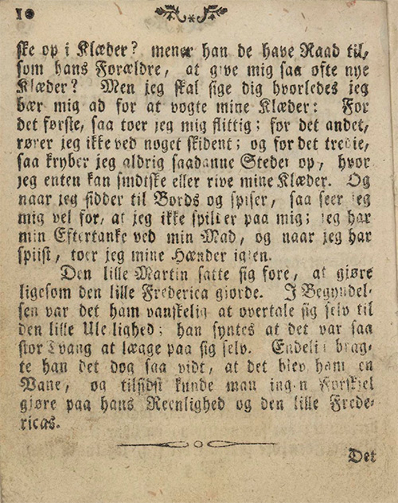

Hva går undervisningsopplegget ut på?
Møter kompetansemål
I historie etter 7ende trinn: «gjere greie for sentrale trekk ved tidsepokane mellomalder, renessanse og opplysningstid i Europa og diskutere grunnar til denne tidsinndelinga» (se Læreplan i samfunnsfag (SAF1-03) - kompetansemål etter 7ende årssted )
Tverrfaglighet
Dette undervisningsopplegget trekker også på ferdigheter fra norskfaget.
I 1739 ble det innført allmueskole i Norge. Allmueskolen skulle undervise kristendom, lesing, skriving og regning. De to siste fagene var likevel frivillig. Skolen ble sett på som en mulighet for staten å oppdra sine innbyggere. Gjennom tekstene som barna arbeidet med lærte de hvordan de skulle være trofaste og lovlydige borgere. Et mål med skolen var også at barna skulle ha skaffet seg nok kunnskap om kristendommen til at de kunne konfirmere seg.
Bøkene
Norge var på 1700-tallet del av det dansk-norske riket. Språket man lærte på skolen på 1700-tallet var dansk. Norsk fantes ikke ennå som skriftspråk. Lenge fantes det ikke trykkerier i Norge. Bøker, både for barn og voksen, kom derfor fra Danmark eller utlandet.
Eksempler på bøker som barn leste på 1700-tallet var «Lommebog for børn», som var en moralsk og oppbyggelig bok som skulle lære barn og unge god og lydig oppførsel.
En av 1700-tallets mest leste barnebøker var Fenelons Thelemakos historie, eller «Stats-Roman, hvilken under det eftertænkkelige Levnets-Beskrivelse om Telemacho Ulyssis Søn, Kongelige Printz af Ithaca». Den var opprinnelig skrevet på fransk, oversatt til dansk av en norsk prest.
 Alfabetet
Alfabetet var også annerledes på 1700-tallet. Da brukte man gotiske bokstaver. Først på 1860-tallet lærte skolebarn å skrive med bokstavene fra det latinske alfabetet som vi er vant med i dag.
Her kan du lære å lese det trykte alfabetet:
Forsøg Til en forbedret Abc-Bog, Ungdommen til Beste, og med Foresattes Samtykke av Christian Schultz, 1779.
Her kan du lære deg å skrive som på 1700-tallet.
Oppgaver:
Hva tror du teksten prøver å lære barn på 1700-tallet?
Hva kan teksten lære barn i dag?
Vil du lese mer om skolen på 1700-tallet?.
Om allmueskolen.
 